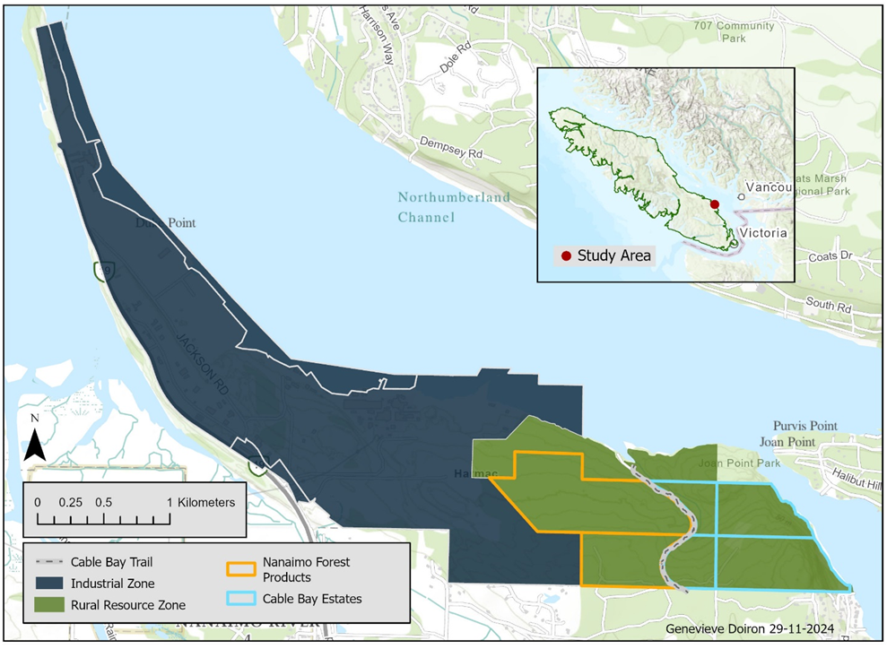
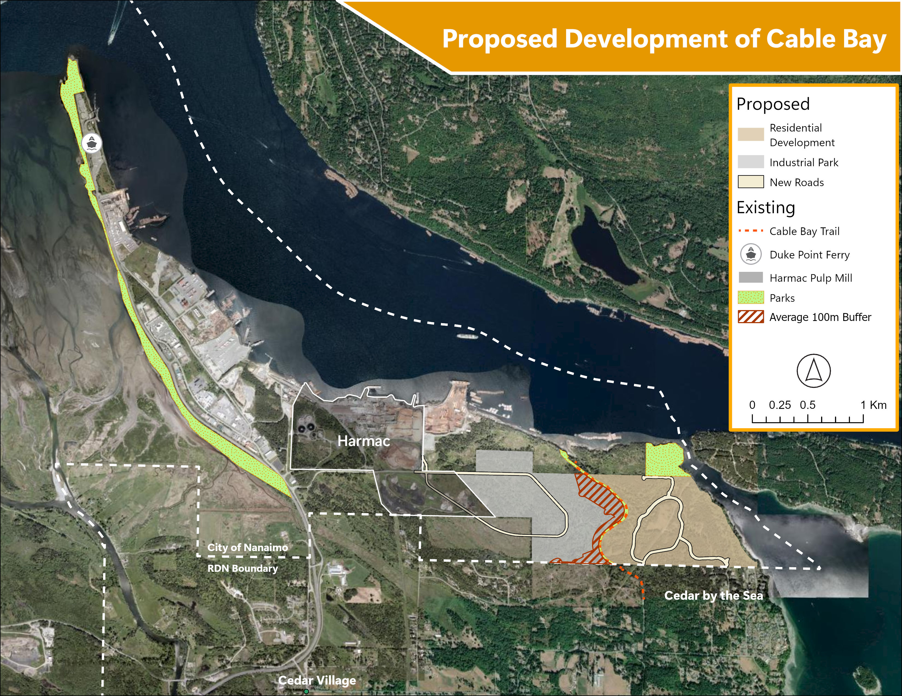
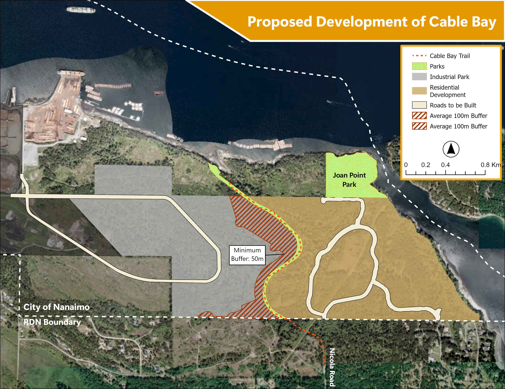

Content & Deliverables
Save Cable Bay
The Cable Bay Trail Area is the location of both a volunteer project I support and my capstone research for my master’s degree. Located on Southeastern Vancouver Island, Cable Bay is surrounded by 400 acres of undeveloped land within the northern range of Garry oak ecosystems (GOEs). The area faces proposed developments currently being opposed by the Save Cable Bay community group.
Study Site Map

Client Work:
As a volunteer for the Save Cable Bay community group, I offer geospatial analysis and visualization support, helping them create materials that support their conservation efforts. This client-based work allows me to collaborate closely with the group, where we exchange ideas and refine materials based on their input, ensuring that the final products effectively communicate their message. The work involves handling a variety of data types, including participatory mapping, which enriches the project by incorporating local knowledge from community members.
Additionally, I am responsible for data sourcing and management, creating and maintaining a comprehensive inventory to track project data for a large group of volunteers. This experience is invaluable for my career, as it strengthens my skills in client communication, data management, and geospatial analysis, while also providing me with practical experience in a real-world, community-based conservation setting.
The maps I created for the community conservation group visually represent both the proposed developments in the area and their alternative vision for the land. These maps serve as critical tools for the group to communicate the potential impacts of development versus their conservation goals. By highlighting the areas of concern, I have helped the group demonstrate how proposed projects could affect the environment, and how their alternative vision aligns better with the community’s conservation values. These maps not only support the group’s advocacy efforts but also provide a clear, visual way to engage with the public, decision-makers, and stakeholders in discussions about land use and conservation priorities. This experience has been an excellent opportunity to enhance my skills in spatial analysis and map design, which are essential for effective communication in environmental management and conservation planning.
Development Maps
Proposed Developments
There is proposed development on both sides of the trail, with the parcels on the East to face potential residential expansion by Cable Bay Estates (CBE) and to the West to be rezoned for heavy industrial use by Nanaimo Forest Products (NFP). Bordering these parcels to the West is industrially zoned land that hosts the Harmac Pulp Mill which is also owned by NFP. The expansion of their property is proposed to include a subdivided industrial park (Seward Developments Inc., 2022). Nanaimo Forest Products has agreed to include a 100m buffer from the trail, however the proposed buffer is only an average of 100m with 50% of the boundary at only 50m from the trail (Seward Developments Inc., 2022). The eastern parcels are facing proposed residential development by CBE; the private owner has applied for subdivision into 34 residential sites (Williamson & Associates Professional Surveyors, 2023).

Alternative Developments

Capstone Research:
On top of the volunteer work, I am conducting my capstone research in the Cable Bay area. In my ongoing capstone research, I am exploring how combining Light Detection and Ranging (LiDAR) data with optical imagery can improve species-level forest classification — witha particular emphasis on identifying rare species—a current limitation of existing approaches. Imagery only often struggle to accurately classify less common species due limited spatial resolution and similarities in spectral signatures. By integrating LiDAR’s detailed structural data with the spectral information from optical imagery, the study seeks to determine if this combination enhances the accuracy of identifying Garry Oaks compared to using optical imagery alone. Specifically, this research aims to support the efforts of the Save Cable Bay community group in protecting Garry Oak ecosystems, which are relatively rare in the research area. Once the most accurate model is determined, a subsequent analysis will be conducted on the impacts of the proposed development scenarios on the Garry oak populations.
While the primary focus is on supporting Garry Oak conservation, the findings have broader applications in resource management and conservation, offering improved methods for species identification and ecosystem monitoring.
Individual Tree Segmentation
This project demonstrates individual tree segmentation (ITS) and subsequent visualizatoin using LiDAR data. I highlight both canopy height model-based and point cloud-based methods for tree detection and segmentation. Specifically, the code snippets show the application of two algorthims: li2012 and dalponte2016.
Skills & Tools Used:
R Programming: Utilized R for data manipulation, analysis, and visualization.
LiDAR Processing: Used the
lidRpackage to load, filter, and normalize LiDAR data, removing outliers and correcting for ground elevation.Tree Segmentation: Applied the
li2012algorithm on the point cloud data for tree segmentation and used thedalponte2016algorithm on CHM data to detect tree tops and segment individual trees.Visualization: Created 3D visualizations of segmented trees using the
rglpackage and compared results from both methods.Raster Analysis: Generated Canopy Height Models (CHM) at 0.5m resolution using
terrato improve segmentation accuracy.
Code Snippets
For both approaches I extracted a plot and subsequently pre-processed the data to remove noise and normalize the point cloud.
# Read in plots
plots <- list.files(path = "Plots", pattern = "\\.las$", full.names = TRUE)
# For Loop to loop through the plots and segment
for(i in plots){
output_dir <- "li_trees"
las <- readLAS(i)
li_trees <- segment_trees(las, li2012(dt1 = 1.5, dt2 = 2, Zu = 15, hmin = 2, speed_up = 10))
plot(li_trees, color = "treeID", pal = (pastel.colors(200)))
output_file <- file.path(output_dir, paste0("segmented_", basename(i)))
writeLAS(li_trees, output_file)
}# Create a canopy height model
CHM_1 <- rasterize_canopy(MKRF_Plot_1, res = 0.5, pitfree(c(0,10,20,30), subcircle = 0.2, max_edge = (c(0,1))))
# Locate Tree Tops (local maximums)
ttops_1 <- locate_trees(CHM_1, lmf(ws=5, hmin=2))
# Segment using Dalponte 2016
plot1_seg_dal <- segment_trees(MKRF_Plot_1, dalponte2016(CHM_1, ttops_1))(Optionally could smooth the CHM prior to tree detection)
Applications
Automatic individual tree segmentation is an evolving area of research with significant potential in forest management and ecological studies. While it can provide valuable insights into tree attributes such as height, crown diameter, and canopy structure, its accuracy is still limited, particularly in dense and complex forest environments. Despite these challenges, this technique offers promising applications in biodiversity monitoring, carbon stock estimation, forest health assessments, and precision forestry, where understanding individual tree characteristics is crucial for sustainable management and conservation efforts.
Least Cost Path Analysis
I conducted a Least Cost Path (LCP) analysis to model Grizzly Bear movement across the Yellowhead region, considering various environmental and human factors that influence movement. The goal was to identify the most efficient route between two points by assessing the costs associated with different landscape features. LCP analysis factored in resistance elements such as terrain, land cover, and infrastructure.
Skills & Tools Used:
QGIS: Raster analysis including deriving input features, completing feature proximity analysis, and reclassifying based on weights of relative cost.
- Tools: “Slope,” “Reclassify,” and “Raster Calculator” “Proximity Analysis”
ArcGIS: Final least cost analysis using the derived cost raster layers as inputs, and final visualization of results.
- Tools: “Distance Accumulation” and “Optimal Path as Line”
Results Visualization:
- Creating the map to communicate the analysis, with its numerous input components, allowed me to strengthen my visual communication skills by effectively presenting complex data in a clear and accessible way, ensuring that key findings were easily understood.

Applications:
The Least Cost Path (LCP) analysis is particularly valuable in conservation work and regional planning, where understanding landscape connectivity is crucial for maintaining habitat corridors and supporting species movement. It can be applied in projects aimed at mitigating habitat fragmentation, guiding conservation strategies, or planning for sustainable land use. Through this project, I also honed my ability to effectively communicate complex results through visual mapping, a skill essential for presenting findings to stakeholders and informing decision-making processes in local and regional environmental management.